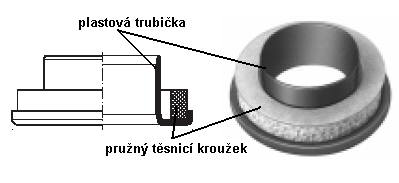

Zásuvka je u této konstrukce vyrobena z plastu nebo plechu. Zespodu je zásuvka těsněna teflonovým kroužkem (na nákresu zvýrazněn žlutě), který je nalepený na horní desce ventilové komory. Na horní straně je o zásuvku opřeno osazení plastové trubičky (modré, v detailu na následujícím obrázku), která je volně zasazena v otvoru píšťalnice.
Trubička je vyrobena zpravidla z tvrdého houževnatého plastu a k zásuvce je přitlačována pomocí pružného těsnicího kroužku (zeleného na předchozím nákresu), vyrobeného např. z měkkého PVC. Pružnost tohoto těsnění zaručuje těsnost celého uzlu i při pohybu zásuvky a dokáže eliminovat i drobné deformace jednotlivých těsnicích ploch.
Jinou variantou těsnění zásuvek na bázi těsnicích kroužků s pružným elementem jsou tzv. "Schmidovy" kroužky (Schmidringe), vyrobené z pružné plastové pěnové hmoty s pojezdovým kroužkem z prešpanu (tvrdé celulózové desky příbuzné papíru).
Schmidovy těsnicí kroužky.